COWALA Infant Formula
Cowala manufactures a wide range of New Zealand derived whey dominant infant formula for balanced development of baby’s bones, brain and eyes. Utilising strict pharmaceutical standards, the infant formula products are especially formulated to meet international standards using the finest quality ingredients.
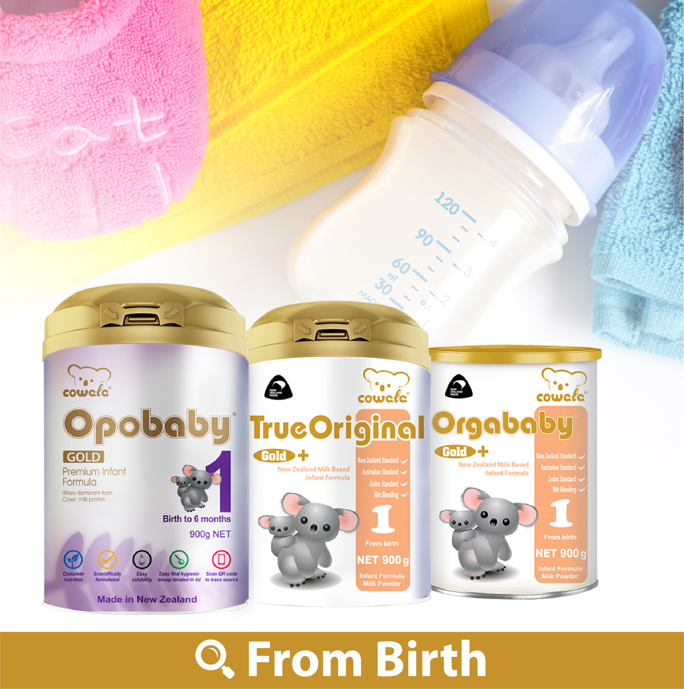
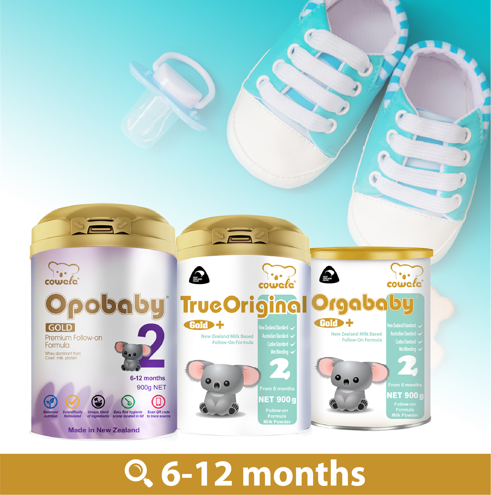
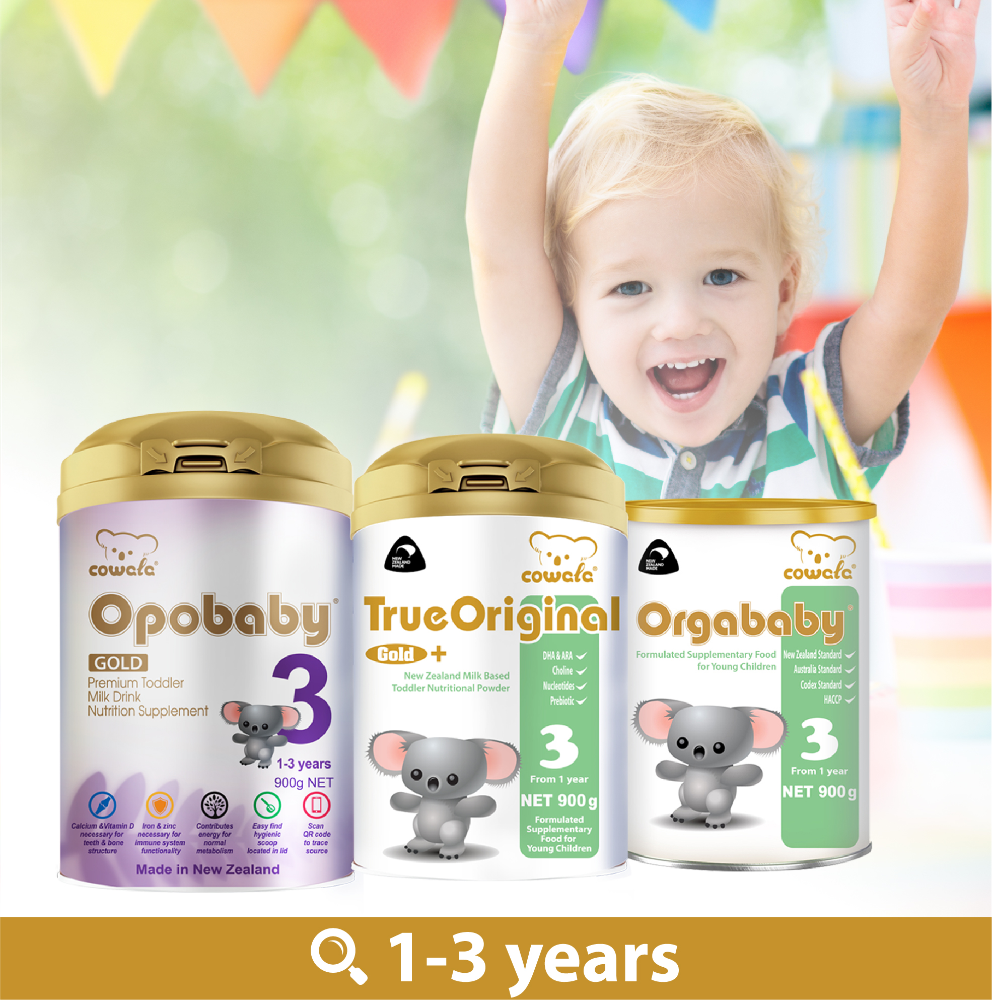
FROM BIRTH
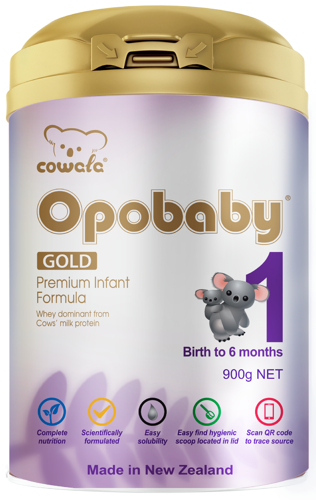
Opobaby Gold Premium Infant Formula
Stage 1 - 900g
Cowala Opobaby Gold Premium Infant Formula has been specifically designed by infant nutrition experts to include key ingredients to meet the unique needs of formula fed infants. Our premium base powder blended with specialised vegetable oil and essential vitamins and minerals provides a soluble and highly nutritious milk formula to support bottle fed infants.
Suitable for 0 to 6-month-old baby
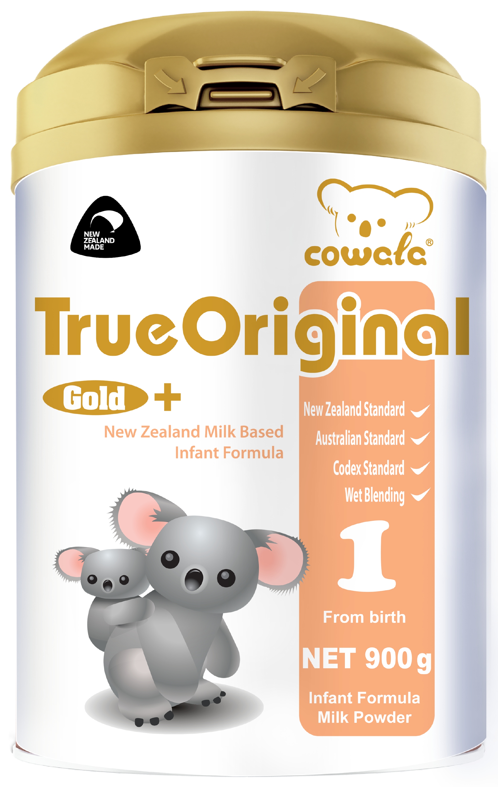
True Original Infant Formula
Stage 1 - 900g
Cowala True Original Infant Formula is a unique formulation, specially designed by Australian and New Zealand scientists as per Australian New Zealand standards to meet the needs of bottle fed infants. This product is processed and packed in New Zealand by HACCP and Good Manufacturing Practices certified factory.
Suitable for 0 to 6-month-old baby
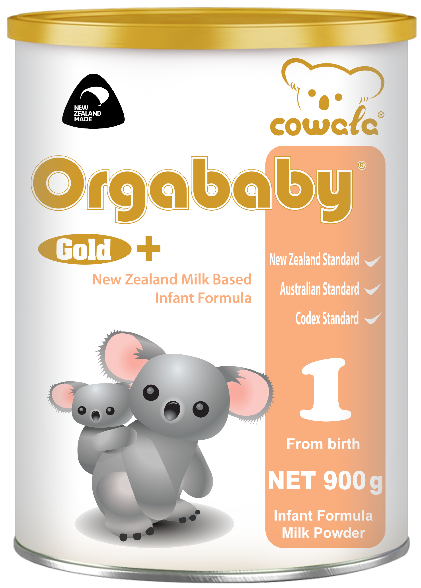
Orgababy Infant Formula
Stage 1 - 900g
Cowala Orgababy Infant Formula is formulated for bottle fed infants from birth, with a New Zealand milk based recipe and carefully selected vitamins and minerals to support everyday infant nutrition.
Suitable for 0 to 6-month-old baby
6–12 months
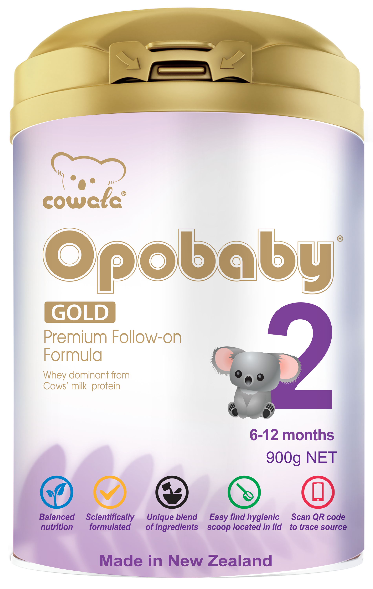
Opobaby Gold Premium Follow-on Formula
Stage 2 - 900g
Cowala Opobaby Gold Premium Follow-on Formula is specially tailored by infant nutrition experts to meet the changing nutrition needs of your growing baby as solids are introduced. Our premium base powder formula contains specialised vegetable oil and essential vitamins and minerals to nutritionally support your baby.
Suitable for 6 to 12-month-old baby
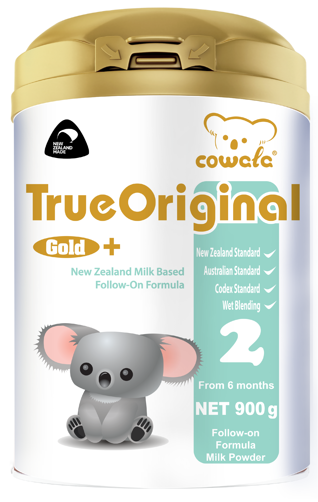
True Original Follow-on Formula
Stage 2 - 900g
Cowala True Original Follow-on Formula is a unique formulation for babies over 6 months old specially designed by Australian and New Zealand standards to meet the increasing requirements of growing infants and the changing dietary needs of babies as solids are introduced.
Suitable for 6 to 12-month-old baby
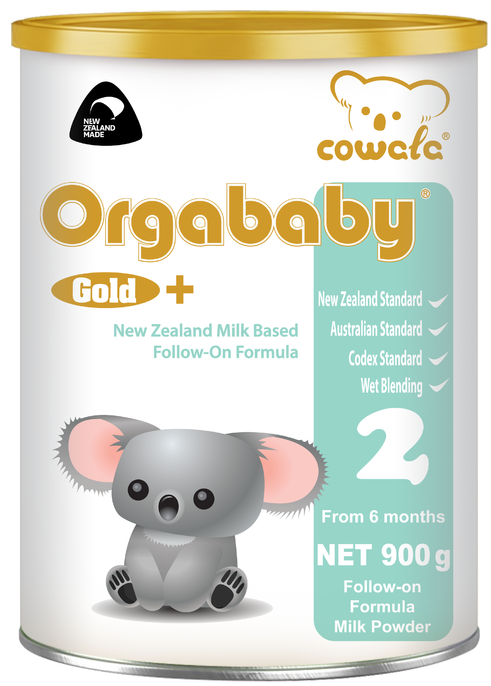
Orgababy Follow-on Formula
Stage 2 - 900g
Cowala Orgababy Follow-on Formula is a unique formulation for babies over 6 months old specially designed by Australian and New Zealand standards to meet the increasing requirements of growing infants and the changing dietary needs of babies as solids are introduced.
Suitable for 6 to 12-month-old baby
1–3 years
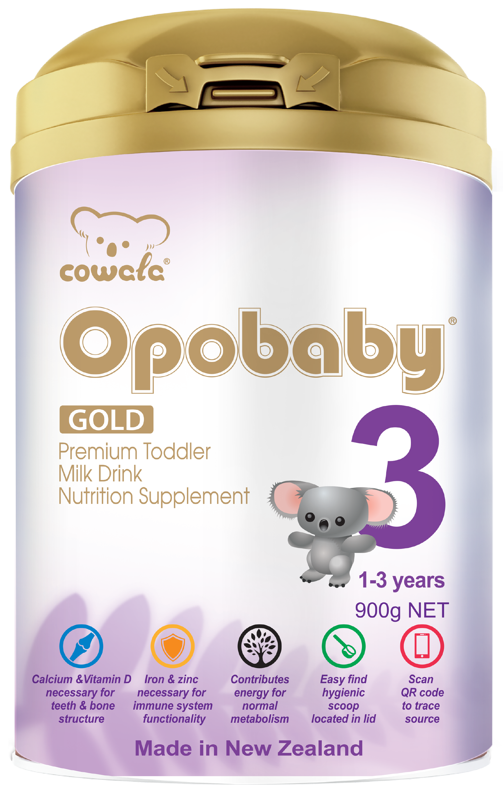
Opobaby Gold Premium Toddler Milk Drink Nutrition Supplement
Stage 3 - 900g
Cowala Opobaby Gold Premium Toddler milk drink is a specifically formulated supplementary food for young children which provides energy and nutritional intake when a toddler’s normal diet may not be adequate. A premium nutritional supplement with specialised vegetable oil, iron, zinc, calcium and other essential vitamins and minerals helps support your toddler’s growth and development.
Suitable for 1 to 3-year-old toddler
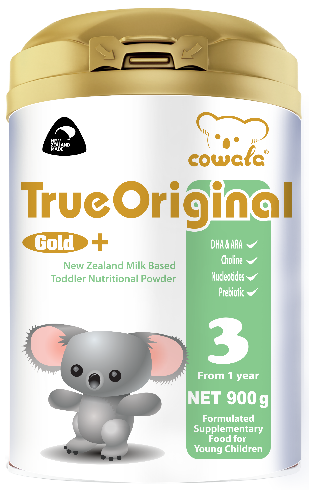
True Original Toddler Nutritional Powder
Stage 3 - 900g
Cowala True Original Toddler Nutritional Powder is a unique formulation for young children to supplement the dietary need of toddlers when their energy and nutritional intake may not be adequate. This product contains vitamins and minerals which nutritionally support toddler’s immune and digestive system.
Suitable for 1 to 3-year-old toddler
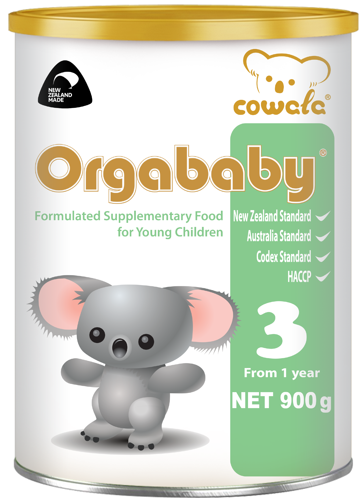
Orgababy Formulated Supplementary Food For Young Children
Stage 3 - 900g
Cowala Orgababy Formulated Supplementary Food For Young Children is a unique formulation for young children to supplement the dietary need of toddlers when their energy and nutritional intake may not be adequate. This product contains vitamins and minerals which nutritionally support toddler’s immune and digestive system.
Suitable for 1 to 3-year-old toddler